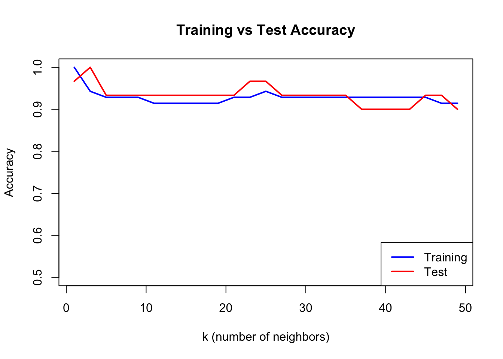
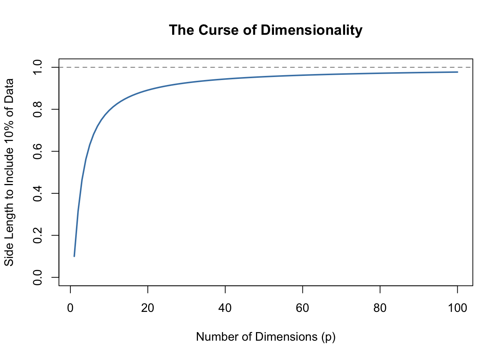

Classification is a supervised learning task where the goal is to predict categorical outcomes. Given a set of features (predictors), we want to assign observations to one of several predefined classes.
Classification problems are ubiquitous in biology and bioengineering. Clinicians diagnose disease states from biomarkers in blood or tissue samples. Researchers classify cell types based on gene expression profiles, enabling the exploration of cellular heterogeneity in complex tissues. Computational biologists predict protein function from amino acid sequences. Ecologists identify species from morphological measurements in the field. In each case, the goal is the same: use measurable features to assign observations to the correct category.
33.2 Distance: The Foundation of Classification
Many classification algorithms rely on measuring how similar or different observations are. Distance quantifies this similarity—observations that are close together are considered similar.
Euclidean Distance
The most common distance measure is Euclidean distance, the straight-line distance between two points.
For two points in two dimensions: \[
d(A, B) = \sqrt{(A_x - B_x)^2 + (A_y - B_y)^2}
\]
In higher dimensions with \(p\) features: \[
d(i, j) = \sqrt{\sum_{k=1}^{p} (x_{ik} - x_{jk})^2}
\]
Example: Distance Between Digit Images
Code
library(dslabs)if (!exists("mnist")) mnist <-read_mnist()set.seed(1995)ind <-which(mnist$train$labels %in%c(2, 7)) %>%sample(500)x <- mnist$train$images[ind, ]y <- mnist$train$labels[ind]# First three labelsy[1:3]
[1] 7 2 7
Code
# Compute distancesx_1 <- x[1, ]x_2 <- x[2, ]x_3 <- x[3, ]# Distance between two 7sdist_same <-sqrt(sum((x_1 - x_2)^2))# Distance between a 7 and a 2dist_diff_1 <-sqrt(sum((x_1 - x_3)^2))dist_diff_2 <-sqrt(sum((x_2 - x_3)^2))cat("Distance between two 7s:", round(dist_same, 1), "\n")
Distance between two 7s: 3273.4
Code
cat("Distance between 7 and 2:", round(dist_diff_1, 1), "and", round(dist_diff_2, 1), "\n")
Distance between 7 and 2: 2311 and 2635.9
As expected, the two 7s are closer to each other than to the 2.
Other Distance Metrics
Beyond Euclidean distance, other metrics are sometimes appropriate:
Manhattan Distance (L1 norm): Sum of absolute differences \[d(x_i, x_j) = \sum_{k=1}^{p} |x_{ik} - x_{jk}|\]
When \(q = 2\), this is Euclidean; when \(q = 1\), this is Manhattan.
33.3 K-Nearest Neighbors (KNN)
K-Nearest Neighbors is one of the simplest and most intuitive classification algorithms. To classify a new observation, KNN finds the k closest observations in the training data and assigns the most common class among those neighbors.
The KNN Algorithm
The KNN algorithm is remarkably straightforward. First, you choose the number of neighbors \(k\) to consider. Then, for each new observation you want to classify, you find the \(k\) training points that are closest to it in feature space. Finally, you assign the class that is most common among those \(k\) neighbors—a simple majority vote. If three of your five nearest neighbors are class A and two are class B, you predict class A.
Figure 33.1: K-nearest neighbors classification: the new point (star) is classified based on its k nearest training points
The Effect of K: Bias-Variance Tradeoff
The choice of \(k\) is critical and illustrates the bias-variance tradeoff that runs through all of statistical learning.
When \(k\) is small (for example, \(k = 1\)), the decision boundary becomes very flexible, adapting tightly to the training data. This produces low bias—the model can capture complex, irregular boundaries—but high variance, because the boundary follows noise in the training data. The result is often overfitting: excellent performance on training data but poor generalization to new observations.
When \(k\) is large, the decision boundary becomes smoother because each prediction averages over many neighbors. This increases bias—the model may miss genuinely local patterns—but reduces variance because individual noisy points have less influence. Too large a \(k\) leads to underfitting, where the model is too simple to capture the true class boundaries.
Figure 33.2: Effect of k on KNN decision boundaries: small k creates complex boundaries (overfitting risk), large k creates smooth boundaries (underfitting risk)
Selecting K with Cross-Validation
We choose the optimal \(k\) using cross-validation:
Code
# Split dataset.seed(123)test_idx <-sample(1:nrow(train_data), 30)train_subset <- train_data[-test_idx, ]test_subset <- train_data[test_idx, ]k_values <-seq(1, 50, by =2)accuracy <-sapply(k_values, function(k) { pred <-knn(train = train_subset[, 1:2],test = test_subset[, 1:2],cl = train_subset$class,k = k)mean(pred == test_subset$class)})train_accuracy <-sapply(k_values, function(k) { pred <-knn(train = train_subset[, 1:2],test = train_subset[, 1:2],cl = train_subset$class,k = k)mean(pred == train_subset$class)})plot(k_values, train_accuracy, type ="l", col ="blue", lwd =2,xlab ="k (number of neighbors)", ylab ="Accuracy",main ="Training vs Test Accuracy", ylim =c(0.5, 1))lines(k_values, accuracy, col ="red", lwd =2)legend("bottomright", c("Training", "Test"), col =c("blue", "red"), lwd =2)

Figure 33.3: Training vs test accuracy as a function of k. Training accuracy is perfect at k=1, but test accuracy reveals true generalization.
When k=1, training accuracy is perfect—each point is its own nearest neighbor. But test accuracy reveals how well the model actually generalizes.
33.4 Confusion Matrices
Classification performance is evaluated with a confusion matrix:
Accuracy can be misleading with imbalanced classes. If 95% of emails are legitimate, a classifier that labels everything as “not spam” achieves 95% accuracy while being completely useless.
Code
# Imbalanced class exampleset.seed(42)# 95% negative, 5% positive (e.g., rare disease screening)n <-1000actual <-factor(c(rep("Negative", 950), rep("Positive", 50)))# Naive classifier: always predict negativenaive_pred <-factor(rep("Negative", n), levels =c("Negative", "Positive"))# Calculate metricsTP <-sum(naive_pred =="Positive"& actual =="Positive")TN <-sum(naive_pred =="Negative"& actual =="Negative")FP <-sum(naive_pred =="Positive"& actual =="Negative")FN <-sum(naive_pred =="Negative"& actual =="Positive")cat("Naive classifier (always predict negative):\n")
The appropriate metric depends on the costs of different errors in your specific application.
Accuracy is appropriate only when classes are balanced and all errors are equally costly. When classes are imbalanced, accuracy can be misleading because a naive classifier that always predicts the majority class achieves high accuracy while being useless for identifying the minority class.
F1 Score balances precision and recall and is appropriate when you care about both equally. It is particularly useful for imbalanced problems because it focuses on the minority class.
Sensitivity (recall) should be prioritized when missing positive cases is costly. In disease screening, for example, failing to detect a cancer (false negative) is typically far worse than flagging a healthy patient for follow-up testing (false positive).
Precision matters most when false positives are costly. In spam filtering, incorrectly flagging a legitimate email as spam may cause the user to miss important messages, so we want to be confident before labeling something as spam.
Balanced accuracy, the average of sensitivity and specificity, provides a quick summary measure that is less misleading than raw accuracy for imbalanced data.
33.5 ROC Curves and AUC
Many classifiers output probabilities rather than hard class labels. By varying the threshold for classifying as positive, we trade off sensitivity against specificity.
The Receiver Operating Characteristic (ROC) curve plots sensitivity (true positive rate) against 1 - specificity (false positive rate) at all possible thresholds.
Figure 33.5: ROC curve showing the tradeoff between sensitivity and false positive rate. The dashed diagonal represents random guessing.
Area Under the Curve (AUC)
The AUC (Area Under the ROC Curve) summarizes classifier performance in a single number. An AUC of 0.5 means the classifier is no better than random guessing—you might as well flip a coin. An AUC of 1.0 represents perfect classification, where the classifier can completely separate the two classes at some threshold. In practice, AUC values above 0.8 are generally considered good, though the acceptable threshold depends on the application. The AUC has an intuitive interpretation: it equals the probability that a randomly chosen positive example is ranked higher than a randomly chosen negative example.
Figure 33.7: Precision-recall curve for imbalanced classification. The horizontal dashed line shows baseline precision.
33.6 The Curse of Dimensionality
Methods like KNN face a fundamental challenge when many predictors are used, known as the curse of dimensionality. In high-dimensional spaces, the geometry of distance becomes counterintuitive. All points become approximately equidistant from each other—the variation in distances shrinks relative to the average distance. As a consequence, “local” neighborhoods must span nearly the entire dataset to include enough observations, and the concept of “nearest” becomes less meaningful when all points are similarly far away.
Code
p <-1:100plot(p, .1^(1/p), type ="l", lwd =2, col ="steelblue",xlab ="Number of Dimensions (p)",ylab ="Side Length to Include 10% of Data",main ="The Curse of Dimensionality",ylim =c(0, 1))abline(h =1, lty =2, col ="gray50")

Figure 33.8: As dimensions increase, the neighborhood size needed to include a fixed proportion of data grows rapidly.
By the time we reach 100 predictors, the neighborhood is no longer very local—each side covers almost the entire dataset. This motivates methods like decision trees and random forests (see Chapter 34) that adapt better to high dimensions.
33.7 Feature Scaling
KNN and other distance-based methods are sensitive to feature scales. A variable ranging from 0-1000 will dominate distance calculations compared to a variable ranging from 0-1.
Always standardize features before applying KNN:
Code
# Demonstrate importance of scalingset.seed(42)data_unscaled <-data.frame(x1 =rnorm(100, 0, 1), # Small scalex2 =rnorm(100, 0, 1000), # Large scaley =factor(rep(c("A", "B"), 50)))# Without scaling - x2 dominatesdata_scaled <- data_unscaleddata_scaled[, 1:2] <-scale(data_scaled[, 1:2])cat("Without scaling:\n")
Without scaling:
Code
cat(" Contribution of x1 to distance: ~1\n")
Contribution of x1 to distance: ~1
Code
cat(" Contribution of x2 to distance: ~1000\n")
Contribution of x2 to distance: ~1000
Code
cat("\nWith scaling:\n")
With scaling:
Code
cat(" Both contribute equally\n")
Both contribute equally
33.8 KNN for Regression
KNN can also predict continuous outcomes. Instead of majority voting, we average the neighbors’ values:
Figure 33.9: KNN regression with different values of k: smaller k gives more flexible fits
33.9 Exercises
Exercise CM.1: KNN Classification
Load the tissue_gene_expression dataset. Split into training (80%) and test (20%) sets.
Use KNN to classify tissue type with k = 1, 3, 5, 7, 9, 11. Report test accuracy for each.
Use 10-fold cross-validation to select the optimal k.
Exercise CM.2: Confusion Matrix Analysis
For your best KNN model, create a confusion matrix. Which tissue types are most often confused with each other?
Calculate sensitivity, specificity, and F1 score for each class.
Exercise CM.3: ROC Curves
Build a binary classifier (e.g., distinguishing one tissue type from all others). Create an ROC curve and calculate AUC.
Compare AUC for KNN models with different values of k. Is higher k always better for AUC?
33.10 Summary
This chapter introduced classification, the supervised learning task of predicting categorical outcomes, along with the tools needed to evaluate classifier performance.
Distance measures similarity between observations and is fundamental to many classification methods. K-Nearest Neighbors (KNN) takes the simplest possible approach: classify each new observation based on the majority class of the \(k\) closest training points. The choice of \(k\) embodies the bias-variance tradeoff—small \(k\) produces flexible but noisy predictions, while large \(k\) produces smoother predictions that may miss local patterns. Cross-validation provides an objective method for selecting the optimal \(k\).
Feature scaling is critical for distance-based methods because variables on different scales contribute unequally to distance calculations. Always standardize predictors before applying KNN.
Confusion matrices organize the four possible outcomes—true positives, true negatives, false positives, and false negatives—providing the foundation for all classification metrics. While accuracy is intuitive, it can be deeply misleading for imbalanced classes. F1 score and balanced accuracy provide better summaries when class frequencies differ substantially.
ROC curves visualize the tradeoff between sensitivity (catching positives) and specificity (avoiding false alarms) across all possible classification thresholds. The AUC summarizes overall classifier performance in a single number, with higher values indicating better discrimination. For highly imbalanced problems, precision-recall curves often provide more informative summaries because they focus on the minority class.
Finally, the curse of dimensionality limits KNN and other distance-based methods in high-dimensional spaces, where the concept of “nearness” becomes increasingly meaningless. This motivates methods like decision trees and random forests that adapt better to many predictors.
33.11 Additional Resources
James et al. (2023) - Comprehensive treatment of classification methods
Hastie, Tibshirani, and Friedman (2009) - Theoretical foundations
Hastie, Trevor, Robert Tibshirani, and Jerome Friedman. 2009. The Elements of Statistical Learning: Data Mining, Inference, and Prediction. 2nd ed. New York: Springer.
James, Gareth, Daniela Witten, Trevor Hastie, and Robert Tibshirani. 2023. An Introduction to Statistical Learning with Applications in r. 2nd ed. Springer. https://www.statlearning.com.
# Classification and Performance Metrics {#sec-classification-methods}```{r}#| echo: false#| message: falselibrary(tidyverse)library(class)library(caret)theme_set(theme_minimal())```## Introduction to ClassificationClassification is a supervised learning task where the goal is to predict categorical outcomes. Given a set of features (predictors), we want to assign observations to one of several predefined classes.Classification problems are ubiquitous in biology and bioengineering. Clinicians diagnose disease states from biomarkers in blood or tissue samples. Researchers classify cell types based on gene expression profiles, enabling the exploration of cellular heterogeneity in complex tissues. Computational biologists predict protein function from amino acid sequences. Ecologists identify species from morphological measurements in the field. In each case, the goal is the same: use measurable features to assign observations to the correct category.## Distance: The Foundation of ClassificationMany classification algorithms rely on measuring how similar or different observations are. **Distance** quantifies this similarity—observations that are close together are considered similar.### Euclidean DistanceThe most common distance measure is **Euclidean distance**, the straight-line distance between two points.For two points in two dimensions:$$d(A, B) = \sqrt{(A_x - B_x)^2 + (A_y - B_y)^2}$$In higher dimensions with $p$ features:$$d(i, j) = \sqrt{\sum_{k=1}^{p} (x_{ik} - x_{jk})^2}$$### Example: Distance Between Digit Images```{r}library(dslabs)if (!exists("mnist")) mnist <-read_mnist()set.seed(1995)ind <-which(mnist$train$labels %in%c(2, 7)) %>%sample(500)x <- mnist$train$images[ind, ]y <- mnist$train$labels[ind]# First three labelsy[1:3]# Compute distancesx_1 <- x[1, ]x_2 <- x[2, ]x_3 <- x[3, ]# Distance between two 7sdist_same <-sqrt(sum((x_1 - x_2)^2))# Distance between a 7 and a 2dist_diff_1 <-sqrt(sum((x_1 - x_3)^2))dist_diff_2 <-sqrt(sum((x_2 - x_3)^2))cat("Distance between two 7s:", round(dist_same, 1), "\n")cat("Distance between 7 and 2:", round(dist_diff_1, 1), "and", round(dist_diff_2, 1), "\n")```As expected, the two 7s are closer to each other than to the 2.### Other Distance MetricsBeyond Euclidean distance, other metrics are sometimes appropriate:**Manhattan Distance** (L1 norm): Sum of absolute differences$$d(x_i, x_j) = \sum_{k=1}^{p} |x_{ik} - x_{jk}|$$**Minkowski Distance** (generalized):$$d(x_i, x_j) = \left(\sum_{k=1}^{p} |x_{ik} - x_{jk}|^q\right)^{1/q}$$When $q = 2$, this is Euclidean; when $q = 1$, this is Manhattan.## K-Nearest Neighbors (KNN)**K-Nearest Neighbors** is one of the simplest and most intuitive classification algorithms. To classify a new observation, KNN finds the k closest observations in the training data and assigns the most common class among those neighbors.### The KNN AlgorithmThe KNN algorithm is remarkably straightforward. First, you choose the number of neighbors $k$ to consider. Then, for each new observation you want to classify, you find the $k$ training points that are closest to it in feature space. Finally, you assign the class that is most common among those $k$ neighbors—a simple majority vote. If three of your five nearest neighbors are class A and two are class B, you predict class A.```{r}#| label: fig-knn-concept#| fig-cap: "K-nearest neighbors classification: the new point (star) is classified based on its k nearest training points"#| fig-width: 7#| fig-height: 5# Simulate two-class dataset.seed(42)n <-100class1 <-data.frame(x1 =rnorm(n/2, mean =2, sd =1),x2 =rnorm(n/2, mean =2, sd =1),class ="A")class2 <-data.frame(x1 =rnorm(n/2, mean =4, sd =1),x2 =rnorm(n/2, mean =4, sd =1),class ="B")train_data <-rbind(class1, class2)# New point to classifynew_point <-data.frame(x1 =3.2, x2 =3.5)# Find 5 nearest neighborsdistances <-sqrt((train_data$x1 - new_point$x1)^2+ (train_data$x2 - new_point$x2)^2)nearest <-order(distances)[1:5]# Plotplot(train_data$x1, train_data$x2,col =ifelse(train_data$class =="A", "blue", "red"),pch =16, xlab ="Feature 1", ylab ="Feature 2",main ="K-Nearest Neighbors (k=5)")points(new_point$x1, new_point$x2, pch =8, cex =2, lwd =2)# Highlight nearest neighborspoints(train_data$x1[nearest], train_data$x2[nearest],cex =2, col =ifelse(train_data$class[nearest] =="A", "blue", "red"))legend("topleft", c("Class A", "Class B", "New point"),col =c("blue", "red", "black"), pch =c(16, 16, 8))```### The Effect of K: Bias-Variance TradeoffThe choice of $k$ is critical and illustrates the **bias-variance tradeoff** that runs through all of statistical learning.When $k$ is small (for example, $k = 1$), the decision boundary becomes very flexible, adapting tightly to the training data. This produces low bias—the model can capture complex, irregular boundaries—but high variance, because the boundary follows noise in the training data. The result is often overfitting: excellent performance on training data but poor generalization to new observations.When $k$ is large, the decision boundary becomes smoother because each prediction averages over many neighbors. This increases bias—the model may miss genuinely local patterns—but reduces variance because individual noisy points have less influence. Too large a $k$ leads to underfitting, where the model is too simple to capture the true class boundaries.```{r}#| label: fig-knn-k-comparison#| fig-cap: "Effect of k on KNN decision boundaries: small k creates complex boundaries (overfitting risk), large k creates smooth boundaries (underfitting risk)"#| fig-width: 9#| fig-height: 4# Create a grid for visualizationx1_grid <-seq(0, 6, length.out =100)x2_grid <-seq(0, 6, length.out =100)grid <-expand.grid(x1 = x1_grid, x2 = x2_grid)par(mfrow =c(1, 3))for (k_val inc(1, 15, 50)) {# Predict on grid pred <-knn(train = train_data[, 1:2],test = grid,cl = train_data$class,k = k_val)# Plot decision regionsplot(grid$x1, grid$x2,col =ifelse(pred =="A", rgb(0, 0, 1, 0.1), rgb(1, 0, 0, 0.1)),pch =15, cex =0.5, xlab ="Feature 1", ylab ="Feature 2",main =paste("k =", k_val))points(train_data$x1, train_data$x2,col =ifelse(train_data$class =="A", "blue", "red"), pch =16)}```### Selecting K with Cross-ValidationWe choose the optimal $k$ using cross-validation:```{r}#| label: fig-knn-cv#| fig-cap: "Training vs test accuracy as a function of k. Training accuracy is perfect at k=1, but test accuracy reveals true generalization."#| fig-width: 7#| fig-height: 5# Split dataset.seed(123)test_idx <-sample(1:nrow(train_data), 30)train_subset <- train_data[-test_idx, ]test_subset <- train_data[test_idx, ]k_values <-seq(1, 50, by =2)accuracy <-sapply(k_values, function(k) { pred <-knn(train = train_subset[, 1:2],test = test_subset[, 1:2],cl = train_subset$class,k = k)mean(pred == test_subset$class)})train_accuracy <-sapply(k_values, function(k) { pred <-knn(train = train_subset[, 1:2],test = train_subset[, 1:2],cl = train_subset$class,k = k)mean(pred == train_subset$class)})plot(k_values, train_accuracy, type ="l", col ="blue", lwd =2,xlab ="k (number of neighbors)", ylab ="Accuracy",main ="Training vs Test Accuracy", ylim =c(0.5, 1))lines(k_values, accuracy, col ="red", lwd =2)legend("bottomright", c("Training", "Test"), col =c("blue", "red"), lwd =2)```When k=1, training accuracy is perfect—each point is its own nearest neighbor. But test accuracy reveals how well the model actually generalizes.## Confusion MatricesClassification performance is evaluated with a **confusion matrix**:|| Predicted Positive | Predicted Negative ||:--|:--:|:--:|| Actual Positive | True Positive (TP) | False Negative (FN) || Actual Negative | False Positive (FP) | True Negative (TN) |```{r}#| label: fig-confusion-matrix#| fig-cap: "Structure of a confusion matrix showing the four possible outcomes"#| fig-width: 6#| fig-height: 5# Visualize confusion matrix structurepar(mar =c(2, 6, 4, 2))cm <-matrix(c("True\nPositive\n(TP)", "False\nPositive\n(FP)","False\nNegative\n(FN)", "True\nNegative\n(TN)"),nrow =2, byrow =TRUE)plot(c(0, 3), c(0, 3), type ="n", axes =FALSE, xlab ="", ylab ="",main ="Confusion Matrix")rect(0.5, 0.5, 1.5, 1.5, col ="lightgreen")rect(1.5, 0.5, 2.5, 1.5, col ="lightcoral")rect(0.5, 1.5, 1.5, 2.5, col ="lightcoral")rect(1.5, 1.5, 2.5, 2.5, col ="lightgreen")text(1, 2, "True\nPositive\n(TP)", cex =1)text(2, 2, "False\nNegative\n(FN)", cex =1)text(1, 1, "False\nPositive\n(FP)", cex =1)text(2, 1, "True\nNegative\n(TN)", cex =1)text(1.5, 2.7, "Predicted", font =2)text(1, 2.5, "Positive")text(2, 2.5, "Negative")text(0.3, 1.5, "Actual", font =2, srt =90)text(0.5, 2, "Positive", srt =90)text(0.5, 1, "Negative", srt =90)```### Key Classification Metrics**Accuracy**: Overall proportion correct$$\text{Accuracy} = \frac{TP + TN}{TP + TN + FP + FN}$$**Sensitivity** (Recall, True Positive Rate): How many positives were caught$$\text{Sensitivity} = \frac{TP}{TP + FN}$$**Specificity** (True Negative Rate): How many negatives were correctly identified$$\text{Specificity} = \frac{TN}{TN + FP}$$**Precision** (Positive Predictive Value): Among positive predictions, how many were correct$$\text{Precision} = \frac{TP}{TP + FP}$$```{r}# Example calculationset.seed(42)actual <-factor(c(rep("Positive", 30), rep("Negative", 70)))predicted <-factor(c(rep("Positive", 25), rep("Negative", 5), # 25 TP, 5 FNrep("Positive", 10), rep("Negative", 60))) # 10 FP, 60 TN# Confusion matrixcm <-table(Actual = actual, Predicted = predicted)print(cm)# Calculate metricsTP <- cm["Positive", "Positive"]TN <- cm["Negative", "Negative"]FP <- cm["Negative", "Positive"]FN <- cm["Positive", "Negative"]cat("\nMetrics:\n")cat("Accuracy:", round((TP + TN) /sum(cm), 3), "\n")cat("Sensitivity (Recall):", round(TP / (TP + FN), 3), "\n")cat("Specificity:", round(TN / (TN + FP), 3), "\n")cat("Precision:", round(TP / (TP + FP), 3), "\n")```### The Problem with AccuracyAccuracy can be misleading with **imbalanced classes**. If 95% of emails are legitimate, a classifier that labels everything as "not spam" achieves 95% accuracy while being completely useless.```{r}# Imbalanced class exampleset.seed(42)# 95% negative, 5% positive (e.g., rare disease screening)n <-1000actual <-factor(c(rep("Negative", 950), rep("Positive", 50)))# Naive classifier: always predict negativenaive_pred <-factor(rep("Negative", n), levels =c("Negative", "Positive"))# Calculate metricsTP <-sum(naive_pred =="Positive"& actual =="Positive")TN <-sum(naive_pred =="Negative"& actual =="Negative")FP <-sum(naive_pred =="Positive"& actual =="Negative")FN <-sum(naive_pred =="Negative"& actual =="Positive")cat("Naive classifier (always predict negative):\n")cat("Accuracy:", (TP + TN) / n, "\n")cat("Sensitivity (Recall):", TP / (TP + FN), "\n")cat("The classifier catches 0% of positive cases!\n")```### F1 Score and Balanced AccuracyFor imbalanced data, better metrics include:**F1 Score**: The harmonic mean of precision and recall:$$F_1 = 2 \cdot \frac{\text{Precision} \cdot \text{Recall}}{\text{Precision} + \text{Recall}} = \frac{2 \cdot TP}{2 \cdot TP + FP + FN}$$**Balanced Accuracy**: The average of sensitivity and specificity:$$\text{Balanced Accuracy} = \frac{\text{Sensitivity} + \text{Specificity}}{2}$$```{r}# Better classifier for the imbalanced dataset.seed(123)better_pred <- actual # Start with actualpos_idx <-which(actual =="Positive")neg_idx <-which(actual =="Negative")better_pred[sample(pos_idx, 10)] <-"Negative"# Miss 10 of 50 positivesbetter_pred[sample(neg_idx, 50)] <-"Positive"# 50 false positives# Confusion matrixTP <-sum(better_pred =="Positive"& actual =="Positive")TN <-sum(better_pred =="Negative"& actual =="Negative")FP <-sum(better_pred =="Positive"& actual =="Negative")FN <-sum(better_pred =="Negative"& actual =="Positive")precision <- TP / (TP + FP)recall <- TP / (TP + FN)specificity <- TN / (TN + FP)# Calculate metricsaccuracy <- (TP + TN) / nf1 <-2* precision * recall / (precision + recall)balanced_acc <- (recall + specificity) /2cat("\nBetter classifier:\n")cat("Accuracy:", round(accuracy, 3), "\n")cat("Precision:", round(precision, 3), "\n")cat("Recall (Sensitivity):", round(recall, 3), "\n")cat("F1 Score:", round(f1, 3), "\n")cat("Balanced Accuracy:", round(balanced_acc, 3), "\n")```### Choosing the Right MetricThe appropriate metric depends on the costs of different errors in your specific application.**Accuracy** is appropriate only when classes are balanced and all errors are equally costly. When classes are imbalanced, accuracy can be misleading because a naive classifier that always predicts the majority class achieves high accuracy while being useless for identifying the minority class.**F1 Score** balances precision and recall and is appropriate when you care about both equally. It is particularly useful for imbalanced problems because it focuses on the minority class.**Sensitivity (recall)** should be prioritized when missing positive cases is costly. In disease screening, for example, failing to detect a cancer (false negative) is typically far worse than flagging a healthy patient for follow-up testing (false positive).**Precision** matters most when false positives are costly. In spam filtering, incorrectly flagging a legitimate email as spam may cause the user to miss important messages, so we want to be confident before labeling something as spam.**Balanced accuracy**, the average of sensitivity and specificity, provides a quick summary measure that is less misleading than raw accuracy for imbalanced data.## ROC Curves and AUCMany classifiers output probabilities rather than hard class labels. By varying the **threshold** for classifying as positive, we trade off sensitivity against specificity.The **Receiver Operating Characteristic (ROC) curve** plots sensitivity (true positive rate) against 1 - specificity (false positive rate) at all possible thresholds.```{r}#| label: fig-roc-curve#| fig-cap: "ROC curve showing the tradeoff between sensitivity and false positive rate. The dashed diagonal represents random guessing."#| fig-width: 7#| fig-height: 6# Simulate a classifier with probabilitiesset.seed(42)n <-500actual <-factor(c(rep(1, 100), rep(0, 400))) # 20% positive# Generate predicted probabilities (imperfect classifier)probs <-c(rbeta(100, 3, 2), # Positives: higher probsrbeta(400, 2, 3)) # Negatives: lower probs# Calculate ROC curve manuallythresholds <-seq(0, 1, by =0.01)roc_data <-data.frame(threshold = thresholds,TPR =sapply(thresholds, function(t) { pred <-ifelse(probs >= t, 1, 0)sum(pred ==1& actual ==1) /sum(actual ==1) }),FPR =sapply(thresholds, function(t) { pred <-ifelse(probs >= t, 1, 0)sum(pred ==1& actual ==0) /sum(actual ==0) }))# Plot ROC curveplot(roc_data$FPR, roc_data$TPR, type ="l", lwd =2, col ="blue",xlab ="False Positive Rate (1 - Specificity)",ylab ="True Positive Rate (Sensitivity)",main ="ROC Curve")abline(0, 1, lty =2, col ="gray") # Random classifier line# Add points for specific thresholdshighlight <-c(0.3, 0.5, 0.7)for (t in highlight) { idx <-which.min(abs(roc_data$threshold - t))points(roc_data$FPR[idx], roc_data$TPR[idx], pch =19, cex =1.5)text(roc_data$FPR[idx] +0.05, roc_data$TPR[idx],paste("t =", t), cex =0.8)}legend("bottomright", c("ROC Curve", "Random Classifier"),col =c("blue", "gray"), lty =c(1, 2), lwd =c(2, 1))```### Area Under the Curve (AUC)The **AUC** (Area Under the ROC Curve) summarizes classifier performance in a single number. An AUC of 0.5 means the classifier is no better than random guessing—you might as well flip a coin. An AUC of 1.0 represents perfect classification, where the classifier can completely separate the two classes at some threshold. In practice, AUC values above 0.8 are generally considered good, though the acceptable threshold depends on the application. The AUC has an intuitive interpretation: it equals the probability that a randomly chosen positive example is ranked higher than a randomly chosen negative example.```{r}# Calculate AUC using trapezoidal ruleroc_sorted <- roc_data[order(roc_data$FPR), ]auc <-sum(diff(roc_sorted$FPR) * (head(roc_sorted$TPR, -1) +tail(roc_sorted$TPR, -1)) /2)cat("AUC:", round(abs(auc), 3), "\n")```### Comparing ClassifiersROC curves allow direct comparison of classifiers:```{r}#| label: fig-roc-comparison#| fig-cap: "Comparing classifiers using ROC curves: higher curves (larger AUC) indicate better performance"#| fig-width: 7#| fig-height: 6# Simulate three classifiers of varying qualityset.seed(42)# Good classifierprobs_good <-c(rbeta(100, 4, 1.5), rbeta(400, 1.5, 4))# Medium classifier (our original)probs_medium <- probs# Poor classifierprobs_poor <-c(rbeta(100, 2, 2), rbeta(400, 2, 2))# Function to calculate ROC datacalc_roc <-function(probs, actual) { thresholds <-seq(0, 1, by =0.01)data.frame(TPR =sapply(thresholds, function(t) { pred <-ifelse(probs >= t, 1, 0)sum(pred ==1& actual ==1) /sum(actual ==1) }),FPR =sapply(thresholds, function(t) { pred <-ifelse(probs >= t, 1, 0)sum(pred ==1& actual ==0) /sum(actual ==0) }) )}roc_good <-calc_roc(probs_good, actual)roc_medium <-calc_roc(probs_medium, actual)roc_poor <-calc_roc(probs_poor, actual)# Plot comparisonplot(roc_good$FPR, roc_good$TPR, type ="l", lwd =2, col ="darkgreen",xlab ="False Positive Rate", ylab ="True Positive Rate",main ="ROC Curve Comparison")lines(roc_medium$FPR, roc_medium$TPR, lwd =2, col ="blue")lines(roc_poor$FPR, roc_poor$TPR, lwd =2, col ="red")abline(0, 1, lty =2, col ="gray")legend("bottomright",c("Good (AUC ≈ 0.90)", "Medium (AUC ≈ 0.75)", "Poor (AUC ≈ 0.50)"),col =c("darkgreen", "blue", "red"), lwd =2)```### Precision-Recall CurvesFor highly imbalanced data, **precision-recall curves** can be more informative than ROC curves because they focus on the minority (positive) class:```{r}#| label: fig-pr-curve#| fig-cap: "Precision-recall curve for imbalanced classification. The horizontal dashed line shows baseline precision."#| fig-width: 7#| fig-height: 5# Calculate precision-recall curvepr_data <-data.frame(threshold = thresholds,precision =sapply(thresholds, function(t) { pred <-ifelse(probs >= t, 1, 0) tp <-sum(pred ==1& actual ==1) fp <-sum(pred ==1& actual ==0)if (tp + fp ==0) return(NA) tp / (tp + fp) }),recall =sapply(thresholds, function(t) { pred <-ifelse(probs >= t, 1, 0)sum(pred ==1& actual ==1) /sum(actual ==1) }))# Remove NA valuespr_data <- pr_data[!is.na(pr_data$precision), ]plot(pr_data$recall, pr_data$precision, type ="l", lwd =2, col ="purple",xlab ="Recall (Sensitivity)", ylab ="Precision",main ="Precision-Recall Curve", ylim =c(0, 1))abline(h =mean(actual ==1), lty =2, col ="gray") # Baselinelegend("topright", c("PR Curve", "Baseline (random)"),col =c("purple", "gray"), lty =c(1, 2), lwd =c(2, 1))```## The Curse of DimensionalityMethods like KNN face a fundamental challenge when many predictors are used, known as the **curse of dimensionality**. In high-dimensional spaces, the geometry of distance becomes counterintuitive. All points become approximately equidistant from each other—the variation in distances shrinks relative to the average distance. As a consequence, "local" neighborhoods must span nearly the entire dataset to include enough observations, and the concept of "nearest" becomes less meaningful when all points are similarly far away.```{r}#| label: fig-curse-dimensionality#| fig-cap: "As dimensions increase, the neighborhood size needed to include a fixed proportion of data grows rapidly."#| fig-width: 7#| fig-height: 5p <-1:100plot(p, .1^(1/p), type ="l", lwd =2, col ="steelblue",xlab ="Number of Dimensions (p)",ylab ="Side Length to Include 10% of Data",main ="The Curse of Dimensionality",ylim =c(0, 1))abline(h =1, lty =2, col ="gray50")```By the time we reach 100 predictors, the neighborhood is no longer very local—each side covers almost the entire dataset. This motivates methods like decision trees and random forests (see @sec-trees-forests) that adapt better to high dimensions.## Feature ScalingKNN and other distance-based methods are sensitive to feature scales. A variable ranging from 0-1000 will dominate distance calculations compared to a variable ranging from 0-1.**Always standardize features before applying KNN:**```{r}# Demonstrate importance of scalingset.seed(42)data_unscaled <-data.frame(x1 =rnorm(100, 0, 1), # Small scalex2 =rnorm(100, 0, 1000), # Large scaley =factor(rep(c("A", "B"), 50)))# Without scaling - x2 dominatesdata_scaled <- data_unscaleddata_scaled[, 1:2] <-scale(data_scaled[, 1:2])cat("Without scaling:\n")cat(" Contribution of x1 to distance: ~1\n")cat(" Contribution of x2 to distance: ~1000\n")cat("\nWith scaling:\n")cat(" Both contribute equally\n")```## KNN for RegressionKNN can also predict continuous outcomes. Instead of majority voting, we average the neighbors' values:$$\hat{y} = \frac{1}{k} \sum_{x_i \in N_k(x)} y_i$$```{r}#| label: fig-knn-regression#| fig-cap: "KNN regression with different values of k: smaller k gives more flexible fits"#| fig-width: 9#| fig-height: 4# Generate non-linear dataset.seed(42)n <-100x_reg <-seq(0, 2*pi, length.out = n)y_reg <-sin(x_reg) +rnorm(n, sd =0.3)reg_data <-data.frame(x = x_reg, y = y_reg)par(mfrow =c(1, 3))for (k_val inc(3, 10, 30)) {# Predict using KNN regression x_grid <-seq(0, 2*pi, length.out =200) pred <-sapply(x_grid, function(xnew) { dists <-abs(reg_data$x - xnew) neighbors <-order(dists)[1:k_val]mean(reg_data$y[neighbors]) })plot(x_reg, y_reg, pch =16, col ="gray60", main =paste("k =", k_val))lines(x_grid, pred, col ="blue", lwd =2)lines(x_grid, sin(x_grid), col ="red", lwd =2, lty =2)legend("topright", c("KNN fit", "True function"),col =c("blue", "red"), lty =c(1, 2), lwd =2, cex =0.7)}```## Exercises::: {.callout-note}### Exercise CM.1: KNN Classification1. Load the `tissue_gene_expression` dataset. Split into training (80%) and test (20%) sets.2. Use KNN to classify tissue type with k = 1, 3, 5, 7, 9, 11. Report test accuracy for each.3. Use 10-fold cross-validation to select the optimal k.:::::: {.callout-note}### Exercise CM.2: Confusion Matrix Analysis4. For your best KNN model, create a confusion matrix. Which tissue types are most often confused with each other?5. Calculate sensitivity, specificity, and F1 score for each class.:::::: {.callout-note}### Exercise CM.3: ROC Curves6. Build a binary classifier (e.g., distinguishing one tissue type from all others). Create an ROC curve and calculate AUC.7. Compare AUC for KNN models with different values of k. Is higher k always better for AUC?:::## SummaryThis chapter introduced **classification**, the supervised learning task of predicting categorical outcomes, along with the tools needed to evaluate classifier performance.**Distance** measures similarity between observations and is fundamental to many classification methods. **K-Nearest Neighbors (KNN)** takes the simplest possible approach: classify each new observation based on the majority class of the $k$ closest training points. The choice of $k$ embodies the bias-variance tradeoff—small $k$ produces flexible but noisy predictions, while large $k$ produces smoother predictions that may miss local patterns. Cross-validation provides an objective method for selecting the optimal $k$.**Feature scaling** is critical for distance-based methods because variables on different scales contribute unequally to distance calculations. Always standardize predictors before applying KNN.**Confusion matrices** organize the four possible outcomes—true positives, true negatives, false positives, and false negatives—providing the foundation for all classification metrics. While **accuracy** is intuitive, it can be deeply misleading for imbalanced classes. **F1 score** and **balanced accuracy** provide better summaries when class frequencies differ substantially.**ROC curves** visualize the tradeoff between sensitivity (catching positives) and specificity (avoiding false alarms) across all possible classification thresholds. The **AUC** summarizes overall classifier performance in a single number, with higher values indicating better discrimination. For highly imbalanced problems, **precision-recall curves** often provide more informative summaries because they focus on the minority class.Finally, the **curse of dimensionality** limits KNN and other distance-based methods in high-dimensional spaces, where the concept of "nearness" becomes increasingly meaningless. This motivates methods like decision trees and random forests that adapt better to many predictors.## Additional Resources- @james2023islr - Comprehensive treatment of classification methods- @hastie2009elements - Theoretical foundations- @thulin2025msr - Modern classification with R